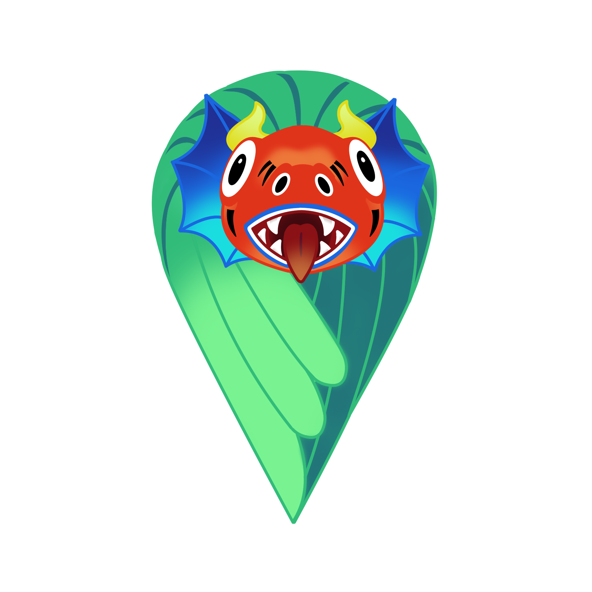
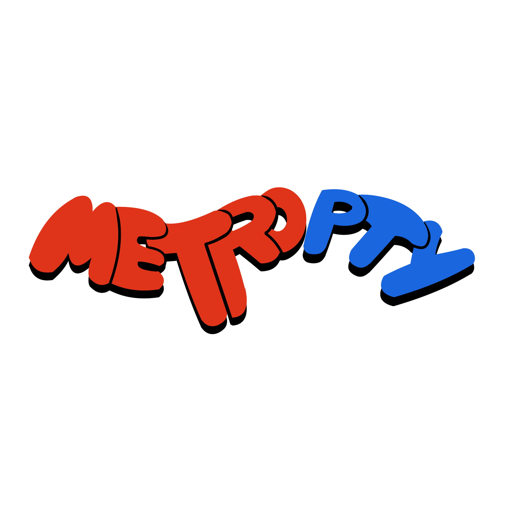

Tu compañero inteligente del Metro de Panamá
350,000 pasajeros diarios sin forma de saber qué está pasando en el metro antes de llegar
No se sabe cuánto falta para el próximo tren ni si hay retrasos
No hay forma de saber qué tan llena está una estación antes de llegar
El Metro no tiene un canal directo para comunicarse en tiempo real con sus pasajeros
Estado de estaciones y trenes actualizado al instante por la comunidad
Miles de pasajeros reportando y validando información entre sí
Puntos, niveles y logros que motivan a participar todos los días
Tecnologías probadas en grandes ciudades que estamos trayendo al Metro de Panamá
Crowdsourcing en tiempo real en 175+ ciudades. Cada usuario comparte datos que mejoran las predicciones para todos
3,500+ ciudades. Los pasajeros reportan retrasos y aglomeración. Ya opera en Panamá con datos básicos
Incentivos y gamificación que lograron cambiar los hábitos del 7.5% de los usuarios en horas pico
MetroPTY combina lo mejor de estas tecnologías con identidad panameña, cultura local y recompensas reales
Ya existen esfuerzos locales. MetroPTY los complementa y lleva al siguiente nivel.
App oficial con horarios y rutas básicas del sistema
Información de rutas del sistema de buses metropolitanos
App creada por estudiantes de la UTP que permite consultar el saldo de la tarjeta MetroBus
Ninguna ofrece datos en tiempo real, reportes comunitarios, gamificación ni identidad cultural. MetroPTY llena ese vacío.
Reportar toma menos de 10 segundos
Ve el mapa y el
estado del metro
Dinos qué ves:
aglomeración, tren
Sube de nivel y
desbloquea logros
Mejor información
para la comunidad
Estado de cada estación en tiempo real, niveles de aglomeración y posición de trenes
Alertas de retrasos, incidencias o cambios en su ruta habitual
El mejor camino entre estaciones con tiempos estimados de viaje
Recargar la tarjeta del metro directamente desde la app, sin hacer fila
Cada reporte genera información valiosa para mejorar el servicio
* Datos generados por la comunidad de usuarios
Saber dónde hay más demanda, qué líneas tienen más incidencias y en qué horarios
Optimizar frecuencias, asignar personal y planificar mantenimiento con datos reales
Los datos los genera la comunidad. El Metro obtiene inteligencia sin inversión adicional
Un canal para llegar al celular de cada usuario del metro
Mantenimientos, cambios de horario, cierres temporales, emergencias
Campañas de buen uso del metro, normas de convivencia, civismo
Ampliaciones de servicio, eventos especiales, logros del sistema
Mensajes segmentados por línea, estación u horario. Llegue directamente a quien necesita la información.
Gamificación + incentivos reales = usuarios activos generando datos
Los usuarios top pueden ganar premios físicos: paraguas, termos, gorras, maletas y más, patrocinados por el Metro o aliados
Juegos de preguntas sobre Panamá, su historia y cultura. Los niños aprenden mientras se divierten usando la app
Logros inspirados en nuestra cultura, historia y tradiciones
2 artistas locales ya confirmados diseñando temas exclusivos para la app. Promovemos talento nacional y les generamos ingresos
Temas por temporada: Carnaval, Fiestas Patrias, Navidad. Cada versión única, coleccionable y con identidad panameña
Una página web complementaria que enseña todo sobre el Metro de Panamá
Guía completa para turistas y nuevos usuarios: rutas, estaciones, horarios, normas
Cómo sacar la tarjeta, dónde recargar, tipos de tarifa, descuentos disponibles
La historia detrás de cada logro de la app, datos curiosos del metro y de Panamá
Ideal para turistas, extranjeros y panameños que quieran conocer más de su sistema de transporte
MetroPTY es autosostenible. Cero costo para el Metro.
Para llevar MetroPTY al siguiente nivel, buscamos una alianza estratégica
Acceso a datos GPS reales de los trenes para mostrar posiciones exactas en el mapa en tiempo real
Datos históricos de retrasos, fallas y mantenimientos para calibrar nuestro sistema de reportes y predicciones
Integración con el sistema de tarjetas para permitir recargas directamente desde la app
Guía de profesionales del Metro en operaciones, seguridad y logística para asegurar precisión en la información
Códigos QR y espacio en pantallas dentro de las estaciones para que los pasajeros descarguen la app
Cifras de torniquetes por estación y horario para calibrar los reportes de aglomeración de la comunidad
Más usuarios = más reportes = mejor información. Cada nuevo pasajero hace la app más valiosa
Gamificación + trivia + incentivos reales mantienen a los usuarios activos día tras día
Hecha por panameños, con artistas panameños y cultura local. Un producto con identidad propia
Datos, canal de comunicación y mejora de imagen. Todo sin inversión. MetroPTY se financia sola
Inteligencia que el Metro nunca ha tenido
Transporte público con identidad panameña
Pasajeros unidos mejorando su propio servicio
Transformando la experiencia del Metro de Panamá, un reporte a la vez.
¿Preguntas?